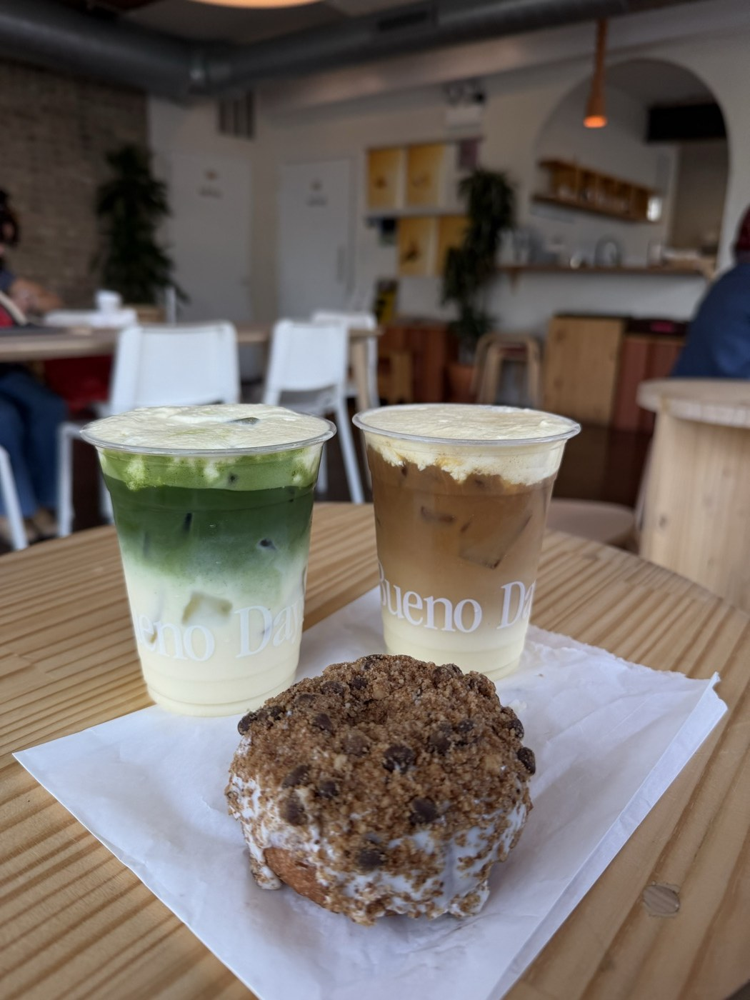
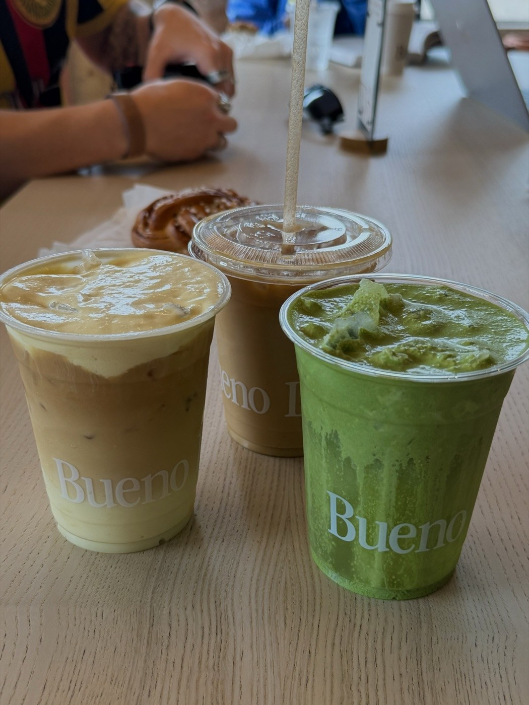
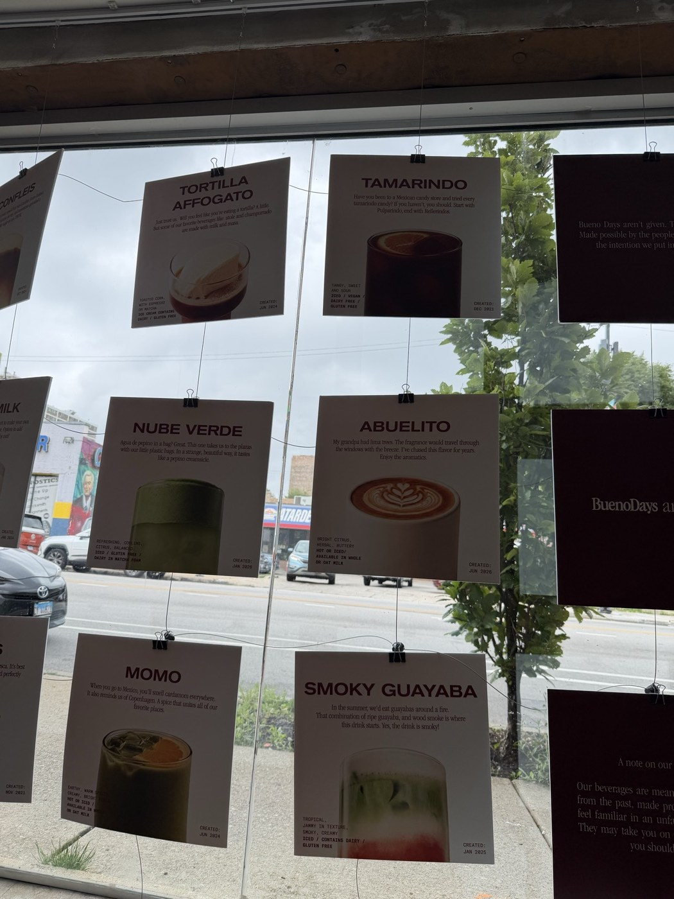
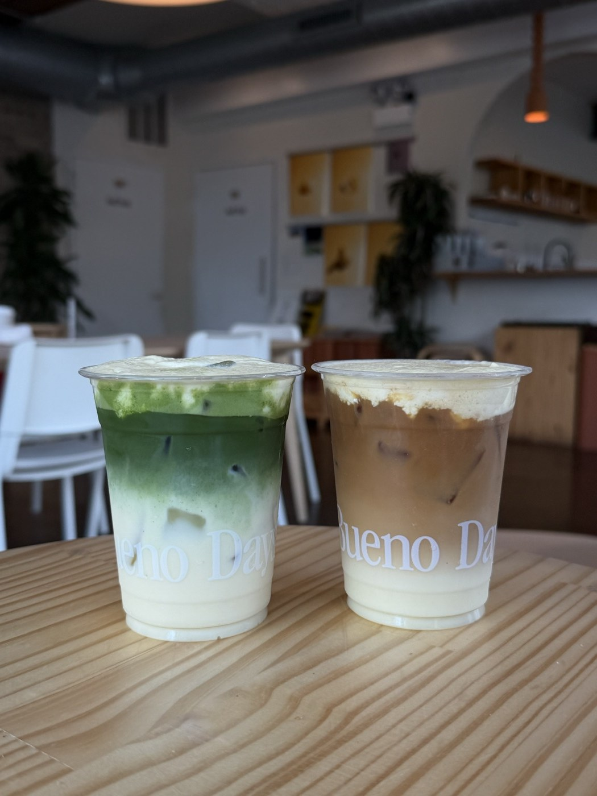
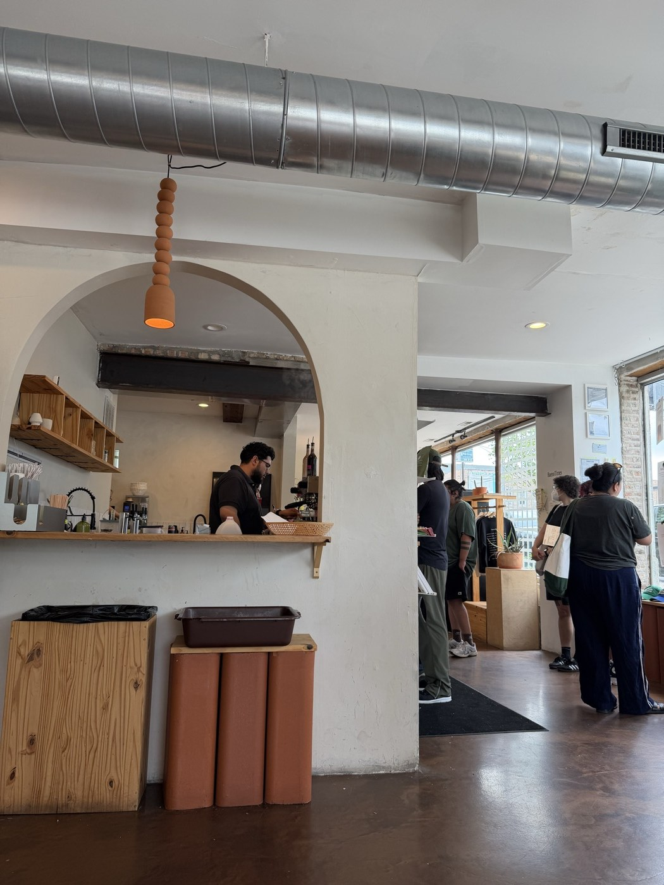
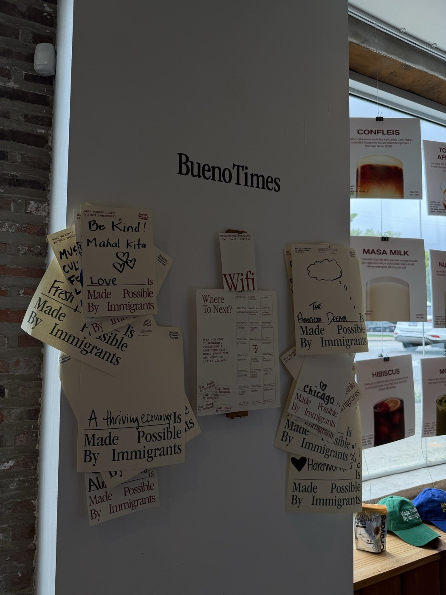
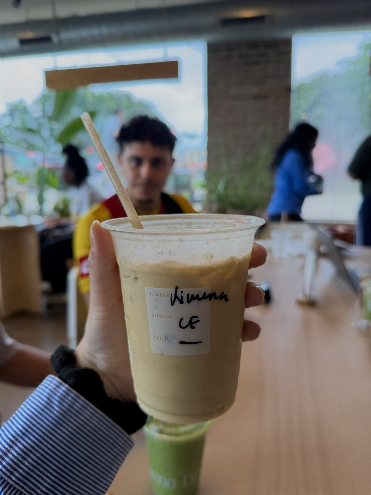
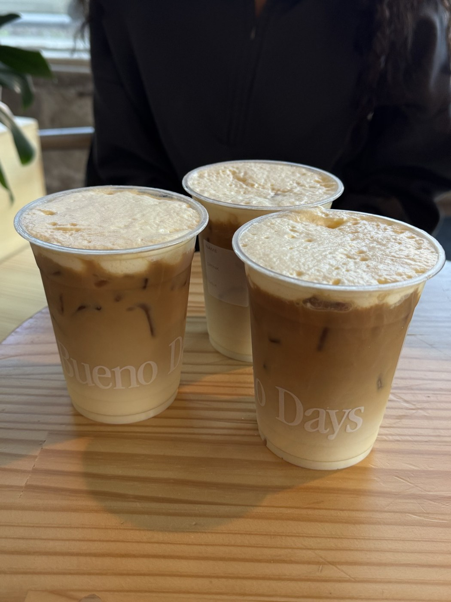

Bueno Days in Little Village


One of my favorite cafes. Bueno Days has the most unique drinks, all celebrating Mexican heritage. I've stopped by a couple of times now. The photos are from earlier in August and this past week but ive visited more!
Confleis latte and confleis matcha. My favorite! It tastes exactly like confleis, but with coffee or matcha.
Abuelito. Citrusy, made with lima. Different, but good!
Nube verde. It tasted like cucumber lime Gatorade with a hint of matcha, very refreshing.


Their pastries are also super good! We got a cookie donut, shown in the first photo, and it was so soft. The cookie on top with the frosting was the perfect amount of sweetness. I'll be coming back for this, and continue to keep coming for the confleis latte for sure.
All of the drinks come in one size and the portions are small, so I wish they had more sizes. Other than that, it's such a nice spot, with so much light and a really nice atmosphere. It's a great place to work from home or just spend time with friends, and you can tell they actually care about the community here. They cycle out drinks from time to time, nube verde will be taken off soon, but i'm excited to see new drinks soon!



